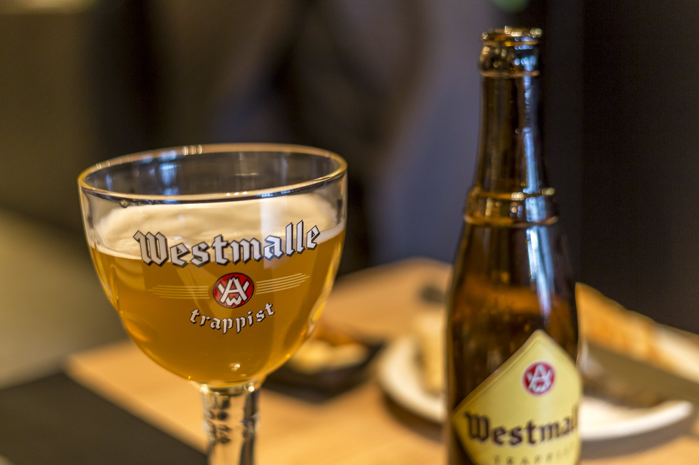
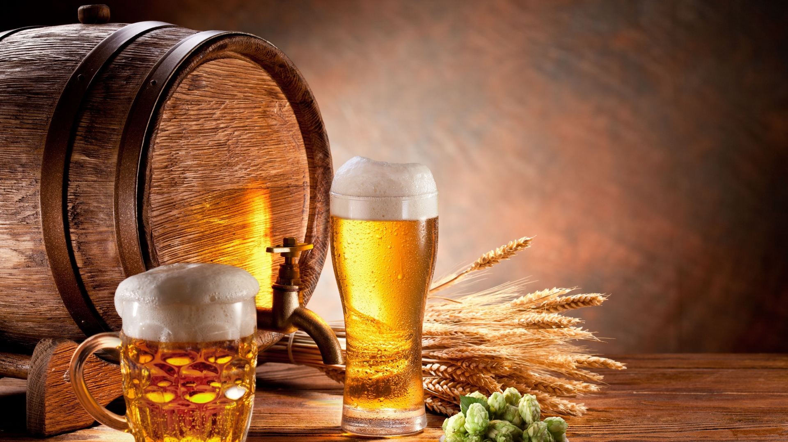
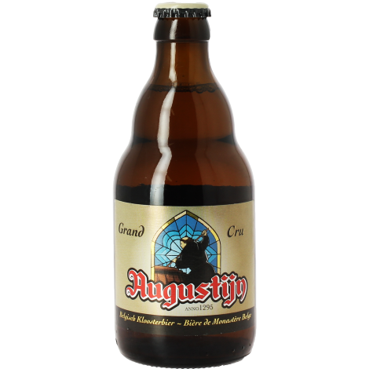

Welkom bij Belgische Streekbieren
Op deze website zul je heel wat meer te weten komen over belgische streekbieren.
Lijst met bieren
| naam bier | percentage alcohol | score caje | score tom | De ceulemans-verbiest-index | |
|---|---|---|---|---|---|
| op 5 | op 5 | op 10 | |||
|  | Augustijn grand cru | 7,00% | 2 | 3 | 5 |
| Aupulus | 8,30% | 4 | 5 | 9 | |
| Bieke | 8,70% | 2 | 2 | 4 | |
| Biere du corsaire | 8,00% | 2 | 3 | 5 | |
| Big nose tripel | 6,90% | 1 | 2 | 3 | |
| Bink Tripel | 7,00% | 2 | 3 | 5 | |
| Bootjesbier | 7,60% | 3 | 3 | 6 | |
| Cesar | 7,00% | 2 | 2 | 4 | |
| Corne | 6,80% | 2 | 2 | 4 | |
| De soldaat | 8,50% | 4 | 3 | 7 | |
| Eden Blond | 8,00% | 2 | 4 | 6 | |
| Ezel | 9,00% | 2 | 2 | 4 | |
| Fort lapin tripel | 9,50% | 3 | 3 | 6 | |
| Gentse Strop | 8,50% | 4 | 4 | 8 | |
| Guldenberg | 9,20% | 3 | 3 | 6 | |
| Herberg tripel | 7,00% | 1 | 2 | 3 | |
| Hop verdomme blond | 7,50% | 4 | 3 | 7 | |
| Jan Van Oudenaarde | 12,00% | 3 | 3 | 6 | |
| Julius | 7,00% | 2 | 2 | ||
| Kapittel bruin | 8,00% | 3 | 3 | 6 | |
| Kapittel watou | 7,50% | 3 | 3 | 6 | |
| Kessel 69 donker | 6,00% | 3 | 3 | 6 | |
| Kessel blond | 6,90% | 1 | 1 | 2 | |
| Klets | 8,00% | 4 | 4 | 8 | |
| Kwibus tripel | 8,00% | 1 | 1 | 2 | |
| La trappe jubilaris amber | 8,50% | 4 | 4 | ||
| La trappe tripel | 8,00% | 2 | 3 | 5 | |
| La troufette | 8,00% | 5 | 4 | 9 | |
| Le fort | 7,00% | 3 | 2 | 5 | |
| Lucifer | 7,00% | 4 | 4 | 8 | |
| Morpheus Tripel | 7,20% | 3 | 3 | 6 | |
| Neuzebier tripel | 8,50% | 3 | 3 | 6 | |
| Nivoo tripel | 8,50% | 3 | 3 | 6 | |
| Norman | 8,50% | 3 | 2 | 5 | |
| Pilaarbijter | 8,50% | 2 | 3 | 5 | |
| Ploegbaas | 9% | 2 | 2 | ||
| Sint Gummarus | 9,40% | 4 | 4 | 8 | |
| Sint gummarus tripel | 7,00% | 3 | 3 | ||
| Sparrijder | 9,00% | 0 | 0 | ||
| St Bernardus tripel Watou | 8,30% | 4 | 5 | 9 | |
| St Feuillien grand cru licht | 8% | 3 | 3 | 6 | |
| Steynemolen | 9,00% | 2 | 3 | 5 | |
| Super des fagnes blond | 8,50% | 2 | 3 | 5 | |
| Tineke van Heule | 8,50% | 2 | 2 | ||
| Tournee general remium triple | 8,50% | 2 | 2 | 4 | |
| Tripel kanunnik | 8,50% | 4 | 3 | 7 | |
| Tripel klok (amber) | 8,20% | 3 | 3 | 6 | |
| Triporteur belgium oak amber | 10,00% | 2 | 2 | 4 | |
| Trisser | 7,50% | 4 | 4 | 8 | |
| Urthel samaranth | 9,00% | 3 | 3 | 6 | |
| Viking | 11,50% | 2 | 3 | 5 | |
| Vleteren blond (honing) | 8,00% | 3 | 2 | 5 | |
| Watou Tripel | 8,50% | 5 | 5 |
Weetjes over bieren
weetje 1
iets
weetje 2
iets
weetje 3
iets
Scroll om bier te drinken! het glas is
0
keer leeggedronken.